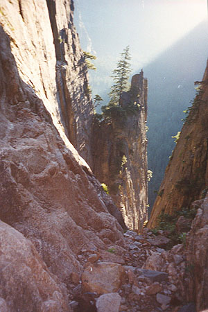
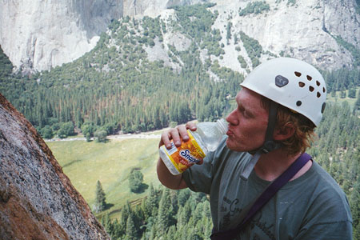
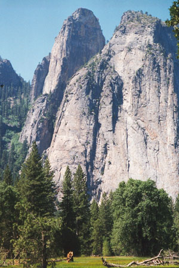
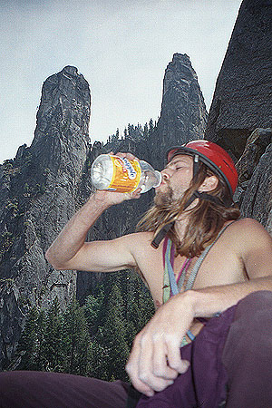
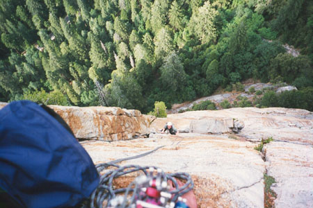

Middle Cathedral Rock+East Buttress
- The East Buttress (5.9, A0)
- June 20-21, 1999
Tom Cormons and I got an early start on the route, we never saw anyone else all day. Tom and I met two days before on the Nutcracker. He is a great guy, and very strong climber. This climb was beyond my ability to lead, so I was happy to second all the pitches but the first (I think a token 5.6 or 5.7!).
I’m writing this 5 years late, so details are sketchy!
Okay, so we are climbing, just loving the views. We come to “Ant Tree Ledge,” and I kid ye knot, while I am belaying Tom on the next pitch, ten thousand marching ants emerge from the tree in a frenzy, somehow smelling our presence. They march along the rope to me where I try to flick them off and still provide a decent belay. Meanwhile, Tom is in the soup because the tricky hand crack above the tree is suddenly suffused with ants! He is trying to climb and place protection gear, with the ants spindling up his arms and going down his back. He is blowing and whimpering and cursing, I can’t imagine being in his shoes, I think I’d let go! I couldn’t believe that this famous ledge from the 1950s still harbored so many ants.





Jeez, that was tiring. Above, we enjoy the view again, but boy is it hot. Water begins to taste so good. Note how important the pictures of us drinking water are: 2 out of 5 pictures are of drinking water! Our next problem was one of mutual inexperience, more mine than Tom’s.
I think there were three pitches really slowed down by my inability to clean some cams. They were the HB trigger-style cams. Tom buried them deeply, which makes so much sense on the lead! But I strained to clean them, finally hanging on the rope for long periods to work with a cleaning tool and raw fingers beginning to bleed at the cuticles (ech). One time I left a cam, so sure that there was no way anyone including Tom could retrieve it. Well, I lowered him down to the cam, he cleaned it, and I had that uncomfortable feeling you get when you are so sure you are right that you are wrong! I felt so bad about that, thinking I understood the problem, occasionally giving a mini-speech to the effect that I wouldn’t let us down like that again, no sir!
Well, it happened again. Tom had to lower half a pitch, clean the cam, and re-climb. So I was dejected. How do we get off of this thing, anyhow?
The A0/5.10c bolt ladder was interesting. If I remember correctly, Tom managed to free it. I didn’t even try, but some 5.9 or 5.10a moves above the ladder were tricky. I remember really admiring some individual long pitches. I couldn’t hand jam worth a darn, maybe that is why I remember the climb as 1000 feet of liebacking?
On the final pitches it was getting dark. We started to hurry, knowing that if we couldn’t find “the Catwalk” before dark we could be stuck. I put extra energy into following very quickly on second. Once I took this too far, and lunged for a piece with 10 feet of slack rope below me (I started using dirty tricks once the sun went down). Well the piece pulled out, and I fell. I could imagine what Tom was yelling. Later he knocked a rock on me. “OWW!” But the helmet absorbed the impact, I was just surprised.
We topped out, stowing any congratulations for later. Now we wandered around unroped on the sloping brushy ledges of the Catwalk, knowing we had to find our way into a deep gully. Up and down the cliffs we went. We came to a dark cliff, and Tom wanted to rappel off. I thought it was crazy, and voted to stay put until morning. I probably actually said “I’m not going anywhere!”
He took it real well, either agreeing with me on some level or understanding that I was a frazzled, tired climber who saw himself as a beginner already in over his head! It was about midnight when we settled onto a pine-needled cove with an ant-covered rock wall behind us and scrub trees around.
The chemical aroma of dead ants, a few delicious sips of water, and bites of a cheese and sausage kit Tom had brought kept us company. Earlier, while we frantically scrambled the dark cliffs a flashlight had signaled us from the valley floor. We signaled back three long dashes, and they went away. I thought it was nice that someone was thinking about us, and equally nice that we were safely waiting until morning.
We talked about our jobs, good stuff in life, future ambitions. A nice time really. My first “unplanned bivouac.” The moon rose over the valley, and I thought back on the last time I watched the moonrise - two nights before hiking up to Little Yosemite. It was such a beautiful place, with only thirst and ants to provide discomfort!
Morning came, and we easily found the path leading into the gully. We made good time, but I needed to rappel a couple of times. I’d never done such a hard climb or stayed out all night like that, and didn’t trust myself that much. Tom got me to agree that one of the rappels was unnecessary, but I had to chuckle on the second one, because he eschewed the rope to prove how easy it was, but looked kind of sketched on the (seriously) 5.7 slabby downclimbing! Okay 5.5, but did I say how thirsty I was?
Soon we were down to the car, and off to Camp IV for blessed sleep. Since then Tom and I exchange Christmas cards. Every time, I am reminded of this singular climb and excellent companion. Sorry it took 5 years to write this Tom!